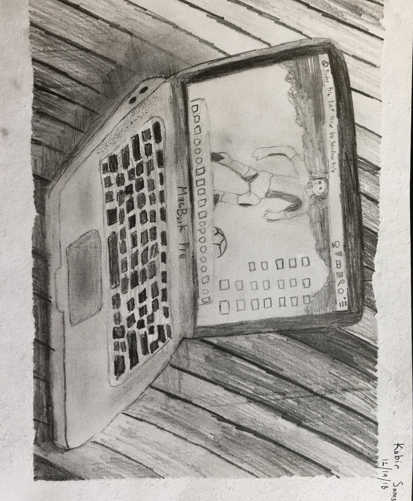

Final Still Life Sketch
Mediums: 0.7 mm Mechanical Pencil, Sketchbook Paper
This was our final assignment in Cycle 3. It was similar to our first assignment in that we had to select an object and sketch it in a realistic way. I chose my computer and sketched it on top of the table, along with my keyboard and wallpaper. We were given 2 weeks to work on this, during which we critiqued each other on things such as shading and similarity to the original object. At the end, I managed to convey my computer, the different shades of the table and the shadow around it. I felt that this was a fairly realistic drawing and I was pleased with it.